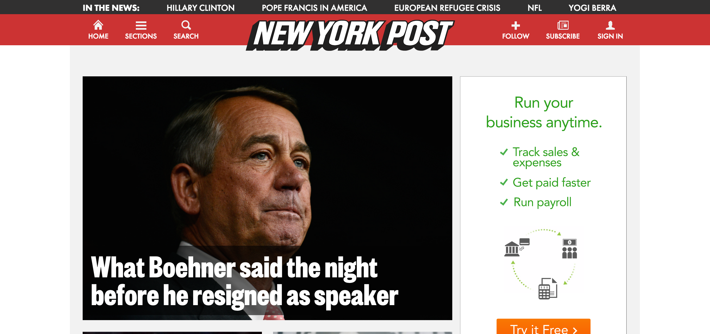
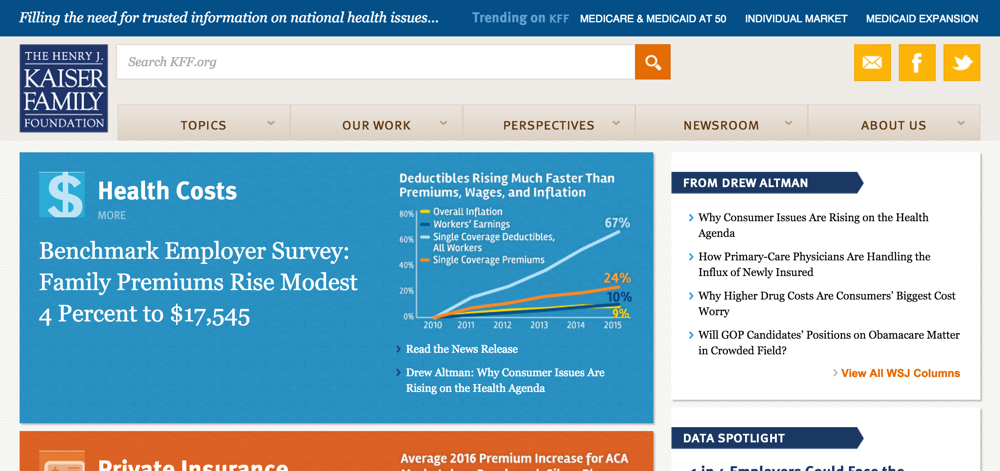

How Can I Help? A Playbook for Collaboration in Big WordPress Projects
Matt Johnson / @xmatt / alleyinteractive.com
http://xmattus.github.io/playbook-for-collaboration
- We are a full-service digital agency
- WordPress.com VIP partner
- Hiring!
Why should I listen to this guy?
- I've been through a lot of these projects.
- I've seen the process go well...and not so well.
- I'm here to talk positive, though!
What is "big"?
- Enterprise = built for an organization, not a person.
- More than one person involved for both client and vendor.
- Just a word. How do you define "big"?
Going Big with WordPress
Going Big with WordPress
Lifecycle of a Big WordPress Project
Discovery
↓
UX Design
↓
Visual Design
↓
Development
↓
QA
↓
Launch
Agile or Waterfall?
- Agile: sprints with short feedback-iteration cycle.
- Waterfall: each phase produces the next phase's deliverables.
- Truly agile process is challenging in new client builds.
Discovery
- A time to learn the entirety of a project's requirements.
- Chance to develop full and complete understanding of the client's context.

(also the title of Daft Punk's second album)
Discovery
How can we help?
- Listen, listen, listen.
- Ask questions to understanding the client organization first. Get specific about design and tech issues second.
- Learn the client's level of experience with big web projects.
- Manage expectations. Finalize the scope after the discovery instead of before, if we can.
Discovery
How can they help?
- Recognize our role as outsiders has benefits and drawbacks.
- Highlight unexpected internal politics and conflicts.
- Explain why the project matters to their organization.
- Give us the big picture first and the details last.
UX Design
- Creating a plan for the site's information architecture.
- Building wireframes to illustrate the likely layout and structure of the site.
UX Design
How can we help?
- Keep wireframes simple and visually non-suggestive.
- Stay close to the notes from discovery.
- Ask questions early and often.
UX Design
How can they help?
- Get stakeholders involved at the right time.
- Recheck assumptions against discovery.
Visual Design
- Crafting a style guide and visual direction for the site.
- Applying the style book to components in the wireframes.
Visual Design
How can we help?
- Design in the browser!
- Seriously though. Design in the browser.
- Emphasize rational decision-making and explain our reasoning.
Visual Design
How can they help?
- Contextualize for stakeholders.
- Remember that design is aesthetic; focus on the reasons for visual decisions.
Development
- Building a WordPress codebase to drive the site.
- Educating our client about its care and feeding.
- Migrating legacy content.
Development
How can we help?
- Put work-in-progress in its proper context.
- Be fully transparent about unexpected complexities.
- Start migration testing early.
Development
How can they help?
- Acknowledge the difficulty of building bespoke software products.
- See the process as a team effort more than an exchange of services for money.
QA and Launch
- Reviewing the finished product against the requirements.
- Tying up loose ends.
- Flipping the switch!
QA and Launch
How can we help?
- Plan ahead. Use a checklist.
- Be sympathetic to the client's timing and coordination needs.
- Reduce their need to double-post content.
QA and Launch
How can they help?
- Relax! :)
- Be honest about what features can be moved to "immediately post launch".
Launch is not the Finish Line
- Be a valuable partner to clients after the launch.
- Build a plan for the long-term health of our product throughout the project.
The End
Want to work on projects like this?
We're hiring.
info@alleyinteractive.com